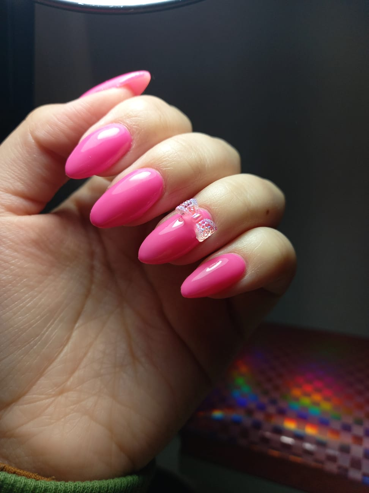

Tipos de Técnicas
Capping

La técnica de capping, también conocida como encapsulado, es un procedimiento en manicura que consiste en aplicar una capa protectora de gel o acrílico sobre las uñas naturales o artificiales. Esta técnica se utiliza principalmente para encapsular decoraciones, como glitter, hojas de oro, flores secas, o cualquier otro elemento decorativo, dentro de la uña, creando un efecto tridimensional y duradero.
Manicura Rusa Combinada

La Manicura Rusa Combinada es una técnica avanzada de cuidado de uñas que se enfoca en la limpieza y preparación minuciosa de la cutícula y la superficie de la uña. Este método combina el uso de fresas de diferentes formas y tamaños junto con herramientas tradicionales, como tijeras o alicates, para lograr un acabado impecable y profesional.
Semipermanente
La manicura semipermanente es una técnica de esmaltado que utiliza un esmalte especial, curado con luz UV o LED, para proporcionar un acabado duradero y resistente. Este tipo de manicura puede durar de 2 a 3 semanas sin astillarse ni perder brillo, ofreciendo una solución práctica y estética para quienes desean mantener sus uñas impecables por más tiempo.